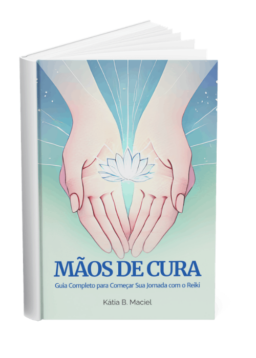
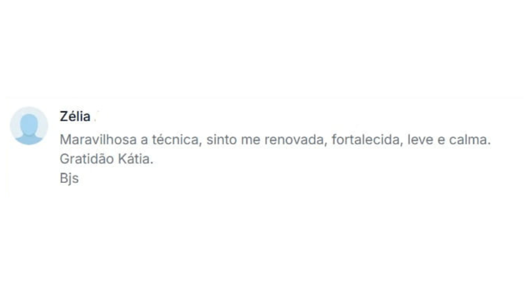

🧘
A yoga
Pede uma hora do seu sábado e um deslocamento que você não consegue encaixar.
Para a mulher que está cuidando de todo mundo, menos de si.
Uma prática japonesa de auto-cuidado feita com as próprias mãos. Não exige treino, não exige fé, não exige mais tempo do que você tem.
Continue lendo para entender como esse gesto pode mudar a sua semana — começando ainda hoje à noite.
Tem horas em que você deita exausta, pega no sono em segundos — e três horas depois acorda do nada.
Não é insônia.
Você dormiu. Mas o seu corpo te chamou de volta no meio da madrugada e você não sabe por quê. Fica deitada no escuro tentando entender. E enquanto tenta, a cabeça começa a girar.
A conversa do trabalho. A coisa que sua filha falou. A conta. Aquela mensagem que você esqueceu de responder. O dia que vem aí. Quando você percebe, são 4h30 e você ainda está acordada.
E não é só de madrugada.
É no meio da manhã, quando você abre o segundo aplicativo antes de fechar o primeiro. Começa uma coisa. Lembra de outra. Volta pra primeira. Perde o fio. Quando vai ver o relógio, já são três da tarde. E você passou o dia fazendo coisas e não terminou nenhuma direito.
Aí à noite, sentada na sala, vem aquela sensação chata. Que ninguém te entende. Que seu marido nem te olha mais. Que sua filha responde torto. Que sua mãe te critica por bobagem. Você suspira e pensa: "tô no meio de um redemoinho. E ninguém percebe."
Eu vou te falar uma coisa agora — e quero que você leia respirando devagar.
Você não tá errada. Você tá exausta. E exausta a gente não enxerga direito.
Eu sei porque eu já estive aí. Olhava pro meu marido e via descaso. Olhava pros meus filhos e via desrespeito. Olhava pra minha mãe e via crítica. Cada pessoa em volta parecia estar contribuindo pra eu afundar mais.
Até o dia em que eu sentei sozinha e percebi uma coisa. Não é que estavam todos contra mim ao mesmo tempo. É que eu tava tão dentro do redemoinho que tudo do lado de fora chegava torto.
O problema não era eles. Era que eu tinha parado de me olhar há tanto tempo, que comecei a usar o olhar dos outros como espelho. E quando o espelho é o cansaço, tudo aparece feio.
Aí eu entendi. Eu não precisava deles me entendendo melhor. Eu precisava voltar a me ver primeiro. E foi quando eu fiz isso que tudo começou a se ajeitar — sem que eu precisasse cobrar de ninguém em volta nada de diferente.
Tem uma frase que eu repito há vinte anos pras minhas alunas, e que talvez seja a coisa mais importante que eu vou te dizer:
"O maior ato de amor ao próximo é você cuidar bem de você."
Você já reparou em quantas vezes por dia você diz pra você mesma "eu vou cuidar disso depois"? A consulta médica que você adia há meses. A amiga que te chamou pra um café e você empurrou com a barriga porque não tinha cabeça. Você não tá fugindo. Você tá tentando sobreviver.
Mas tem uma conta que vai chegando.
Tem dia que você liga o chuveiro, entra debaixo da água quente, e fica ali parada — não porque tá relaxando, mas porque é o único lugar da casa onde ninguém vai te chamar.
Tem dia que você abre o armário pra escolher uma roupa e fecha do mesmo jeito, porque pensar nisso já é demais. Tem dia que você passa por um espelho e nem se reconhece direito. Não é que envelheceu. É que tem alguém ali dentro que parece exausta de um jeito que ainda não dá pra explicar.
E quando alguém te pergunta "tudo bem?", você responde "tô cansada" e finge que é a resposta inteira. Mas não é. Cansada todo mundo fica. O que você sente é diferente. É um cansaço que dormir não cura. Que o fim de semana não repõe. Que as férias não consertam.
E às vezes, no meio da tarde, no meio do nada, vem aquela tristeza que aparece sem motivo. Você não sabe explicar. Não aconteceu nada de errado. Mas vem. Não é depressão. É uma saudade. Saudade de você. Da sua essência. Daquela mulher que você era antes do redemoinho começar.
O que você tá sentindo não é problema de uma camada só. É corpo cansado, mente cheia e coração desconectado — os três ao mesmo tempo.
Você precisa de um gesto que toque os três ao mesmo tempo.
Meu nome é Kátia. Há vinte anos eu acompanho mulheres a saírem desse redemoinho. Não com motivação. Não com mais um livro de auto-ajuda. Não com mais uma lista de hábitos pra encaixar numa agenda que já não cabe.
Com um gesto.
Um gesto antigo, japonês, que cabe em três respirações. Você senta onde estiver. Põe as duas mãos no centro do peito, uma sobre a outra. Inspira fundo. Solta. Repete três vezes.
Na primeira vez, você sente só o seu coração batendo mais forte do que você imaginava. Mas no terceiro ou quarto dia que você fizer isso, geralmente vem uma mensagem das minhas alunas dizendo a mesma coisa, com palavras parecidas:
"Kátia, minha cabeça acalmou."
Sem esforço pra parar de pensar. Sem precisar fugir do mundo. Sem virar monge. A cabeça acalma sozinha — porque ela finalmente teve um lugar pra pousar. E quando a cabeça acalma, o resto se ajeita.
Você dorme a noite inteira. Termina o que começa. Reage diferente quando alguém te responde torto. Volta a se reconhecer quando passa na frente do espelho. Você volta pra você.
Esse gesto vem de uma tradição japonesa de cura chamada Reiki. E é só o começo.
Eu reuni esse e outros gestos, princípios e práticas — todos simples, todos ensinados passo a passo, todos pensados pra mulher que tem 5 minutos no dia, não 50 — num livro chamado Mãos de Cura.
Foi escrito pra mulher que está carregando o redemoinho há tanto tempo que esqueceu como era antes.
Esse gesto que eu te ensinei lá no começo — duas mãos no peito, três respirações — vem de uma tradição japonesa que existe há mais de cem anos.
Chama Reiki.
Talvez você já tenha ouvido falar e achado bonito, mas pensado que não era pra você. Talvez ache que precisa de "dom" pra praticar. Talvez tenha medo de que seja místico demais. Eu já ouvi tudo isso. E eu vou te dizer com toda calma do mundo:
não é nada disso.
Reiki é, antes de qualquer coisa, uma prática de auto-cuidado feita com as mãos.
Você senta. Põe as mãos em pontos do seu próprio corpo. Respira. Repete frases simples que ensinam a sua mente a desacelerar. E o seu sistema nervoso responde. Sua frequência cardíaca baixa. Sua mente para de girar. Seu corpo começa a soltar o que estava segurando.
Isso acontece sem fé. Acontece sem religião. Acontece em qualquer mulher de qualquer crença, porque o que está acontecendo no seu corpo é real e mensurável.
Quem é da prática diz que existe uma energia universal envolvida — a tal "energia vital", o Ki. Eu acredito nisso. Vinte anos de prática me deram certeza.
Mas você não precisa acreditar pra começar.
Você só precisa fazer.
O efeito vem antes da fé. A fé vem depois — quando você já sentiu, já viveu, já viu acontecer. É assim que eu ensino. É assim que está nesse livro.

"O efeito vem antes da fé."
Você apoia as mãos no peito, respira fundo, e seu sistema nervoso desacelera. Só isso. A camada espiritual existe pra quem quiser, depois — mas não é obrigatória pra começar.
E olha — eu sei o que você tem feito.
Você fica pensando. Pensa que vai começar a fazer yoga semana que vem. Pensa que vai voltar pra academia agora em janeiro. Pensa que vai marcar uma terapia. Pensa que devia ler aquele livro que sua amiga indicou.
Pensa, pensa, pensa. E nunca começa.
Não é preguiça. Eu sei que não é. Cada uma dessas opções exige um esforço que você não tem mais pra dar.
🧘
Pede uma hora do seu sábado e um deslocamento que você não consegue encaixar.
🏃
Pede disciplina pra ir três vezes por semana num horário que sua rotina não tem.
💬
Pede um compromisso de meses e um valor por mês que pesa no orçamento.
📖
Pede silêncio e cabeça pra ler — e silêncio é exatamente o que falta.
Você não falhou em nenhuma delas. Você nem chegou a tentar — porque todas pedem energia que você não tem agora.
É um ciclo cruel: você precisa de descanso pra conseguir cuidar de você. Mas você precisa cuidar de você pra conseguir descansar. E você fica girando em volta disso há tanto tempo que já nem percebe.
Eu quero te dizer uma coisa que talvez ninguém tenha te dito ainda.
O que você tá sentindo não é problema de uma camada só. É corpo cansado, mente cheia e coração desconectado — os três ao mesmo tempo.
Yoga trabalha o corpo. Terapia trabalha a mente. Livro trabalha a inspiração. Cada um trata uma camada. E o seu problema não tá numa camada. Tá nas três juntas.
Você precisa de um gesto que toque os três ao mesmo tempo. Que use o corpo pra acalmar a mente. Que use a mente pra liberar a emoção. Que use a emoção pra reconectar você com você mesma. Um gesto só. Que funcione em camadas, em silêncio, sem precisar entender filosofia.
É exatamente isso que você vai aprender no Mãos de Cura.
Eu trabalho com Reiki há vinte anos. Mais de três linhagens de mestrado. Mais de duas mil alunas formadas. Um canal no YouTube com mais de oitenta mil mulheres acompanhando. Livros publicados.
E em todos esses anos, uma coisa ficou clara pra mim: a maioria dos livros e dos cursos de Reiki são escritos pra reikianos.
Pra quem já está dentro. Pra quem já fez iniciação. Pra quem já fala a língua. Isso é uma falha enorme — porque a mulher que mais precisa desse trabalho é justamente a que ainda não chegou nele.
Então eu fiz uma coisa diferente. Peguei tudo que eu aprendi em vinte anos — todos os princípios, todas as técnicas, todas as práticas que mudaram a minha vida e a vida das minhas alunas — e organizei num sistema simples, em três pilares, que qualquer mulher pode começar a usar hoje à noite, antes de dormir.
Esse sistema se chama Método Mãos de Cura. O método tem três pilares. Você vai aprender os três no livro.
01
São cinco frases curtas, ensinadas pelo fundador do Reiki há mais de cem anos. Não são mantras. Não são afirmações de auto-ajuda. São direcionamentos práticos pra mente — coisas como "só por hoje, eu sou calma" e "só por hoje, eu confio". Você lê de manhã, lê à noite, e em poucos dias começa a notar que sua reação mudou. Você ainda passa por situações difíceis. Mas reage diferente. Não explode, não trava, não fica revivendo a cena por horas depois.
02
O Reiki ensina pontos específicos do seu próprio corpo onde você apoia as mãos pra acalmar áreas específicas: o peito, a barriga, a cabeça, o pescoço. Cada ponto trabalha um aspecto. As mãos no peito acalmam a mente acelerada. As mãos na barriga liberam a tensão acumulada. As mãos na cabeça ajudam o sono. Você não precisa decorar nada. O livro mostra cada posição com clareza.
03
A ponte entre os outros dois. Os princípios entram pela mente, as mãos entram pelo corpo, e a respiração faz a comunicação acontecer. É uma respiração simples — não é técnica de yoga, não exige treino. É a respiração que você já faz quando suspira fundo no fim do dia. A diferença é que aqui você faz com intenção. Os três pilares juntos formam o Método Mãos de Cura.
Não é teoria. É uma prática de cinco minutos que cabe em qualquer rotina, que funciona em qualquer crença, e que entrega resultado nos primeiros dias.
E o livro Mãos de Cura é o ponto de partida desse método. Foi escrito pra você que tá lendo isso agora.
O Mãos de Cura é um livro digital que fica disponível dentro do meu portal de alunos. Você ganha acesso permanente a esse livro nesse espaço, e pode acessar pelo seu celular ou computador a qualquer hora.
Você compra agora, e em poucos minutos recebe o link de acesso. Entra na sua área, e o livro está lá. Pronto pra você abrir e começar.
Ele foi pensado pra ser lido em pedaços pequenos — porque eu sei que sua atenção tá curta. Você lê umas páginas tomando café da manhã. Lê mais um pouco sentada na sala depois do almoço. Lê dez minutos antes de dormir, deitada na cama. Não é um livro pra ler de uma vez. É um livro pra ler no seu tempo, do jeito que sua semana permitir.
Ao longo do livro você vai encontrar exemplos práticos pra aplicar em diferentes situações do seu dia — quando você acordar de madrugada, quando estiver no meio de um momento difícil no trabalho, quando alguém te tirar do sério, quando você precisar dormir melhor à noite. Cada uma dessas práticas leva de cinco a dez minutos. Você lê, faz, fecha o livro, segue o seu dia.
E no fim do livro, você encontra um Cronograma de 7 Dias do Método Mãos de Cura — um mapa simples que te diz exatamente qual capítulo ler em cada dia da primeira semana, e qual prática fazer. Você não precisa decidir nada. É só seguir.
No sétimo dia, você terá feito mais práticas reais do que em qualquer livro que comprou nos últimos anos.
Não porque você é mais disciplinada agora. Porque o livro é desenhado pra caber em quem não tem tempo nem cabeça pra mais nada.

O gesto japonês de 5 minutos que descarrega a mente acelerada quando a cabeça não quer parar de girar — funciona em qualquer lugar, sem ninguém precisar saber.
Os cinco princípios que mais de cem anos de prática transformaram em direcionamento diário pra mulheres que vivem no automático — você lê em vinte segundos, aplica em qualquer dia.
A posição exata das mãos pra noites em que você acorda de madrugada e não consegue voltar a dormir — pode fazer ainda na cama, sem acender a luz.
Por que tentar "esvaziar a mente" não funciona — e o que fazer no lugar quando os pensamentos não querem parar.
A respiração simples que você já faz quando suspira fundo no fim do dia — e como transformar ela em ferramenta de cura quando feita com intenção.
Como identificar o que está te tirando energia sem que você perceba — e o que fazer pra recuperar.
O exercício para os momentos em que você está prestes a explodir com alguém que você ama — pode aplicar antes mesmo da palavra sair da boca.
A prática japonesa de cinco minutos antes de dormir que vai te ajudar a desligar a mente, soltar o peso do dia e voltar pra você mesma — começando hoje à noite.
Eu não cheguei nesse trabalho por um caminho fácil, e provavelmente é por isso que ele faz sentido pra você agora.
Eu já fui aquela mulher que olhava o teto às 3 da manhã se perguntando o que tinha de errado comigo.
Já fui aquela mulher que entrava debaixo do chuveiro pra ter um minuto de paz longe da família.
Já fui aquela mulher que olhava no espelho e não reconhecia direito quem estava ali.
Foi por isso que eu escrevi esse livro do jeito que escrevi. Não como uma mestra falando do alto do tatame pra discípulas. Como uma mulher que esteve no mesmo redemoinho que você está agora, e que tropeçou em algo que mudou tudo.
Não foi mágica. Foi prática. Foi paciência. Foi começar com um gesto de cinco minutos antes de dormir, depois outro pela manhã, depois ir descobrindo, dia a dia, que aquilo estava me costurando de volta.
Hoje, vinte anos depois, eu tenho mais de três linhagens de mestrado em Reiki. Tenho mais de duas mil mulheres formadas pelos meus cursos. Tenho um canal no YouTube com mais de oitenta mil mulheres acompanhando. Tenho associações profissionais que reconhecem meu trabalho.
Mas nada disso é o que importa.
O que importa é que eu sei exatamente como é estar onde você está agora — e eu sei o caminho de volta. Esse livro é esse caminho, escrito do jeito mais simples e direto que eu consegui fazer.
Pra você que está cansada de ler livro complicado. Pra você que não tem tempo nem cabeça pra mais um curso. Pra você que precisa começar hoje.

"O maior ato de amor ao próximo é você cuidar bem de você."
Em vinte anos de trabalho, eu recebi mensagens, áudios e cartas de centenas de mulheres me contando o que mudou na vida delas depois que começaram a aplicar o que está nesse livro.
Mulheres que fizeram meus cursos online. Mulheres que me acompanham pelo YouTube. Mulheres que aprenderam comigo o mesmo método, os mesmos princípios, as mesmas práticas que você vai encontrar nessas páginas.
O que mudou na vida delas, pode mudar na sua.

Esses depoimentos não são exceção. São o que acontece quando uma mulher para um pouco e volta pra si mesma. E é exatamente isso que eu quero pra você. Por isso esse livro existe.
O método completo da Kátia, organizado em três pilares — Os Cinco Princípios, As Mãos e A Respiração — para você começar a praticar Reiki como auto-cuidado a partir de hoje.
Comparação real: livros impressos sobre Reiki em livraria custam entre R$ 60 e R$ 120.
Sua primeira semana já organizada. Qual capítulo ler em cada dia. Qual prática fazer. Sem precisar decidir nada — é só seguir e completar a primeira jornada.
Áudio guiado com a voz da Kátia recitando os Cinco Princípios do Reiki, com pausas pra respiração entre eles. Você coloca pra tocar de manhã enquanto se arruma, antes de dormir, ou em qualquer momento do dia em que precisar reencontrar a calma. Em poucos dias, os princípios viram parte de você.
Comparação real: meditações guiadas com instrutores certificados custam entre R$ 30 e R$ 80 cada.
Pacote de cards imprimíveis, em quatro tamanhos diferentes, pra você espalhar pela sua casa, pelo seu trabalho, pela sua bolsa.
Tem o tamanho meia página, pra você imprimir e colar onde quiser passar os olhos todo dia. Tem o tamanho 10x15, pra você plastificar e colocar num porta-retratos na sua mesa. Tem o tamanho de carteira, pra você carregar com você. E tem uma folha com quatro cards pequenos pra recortar e distribuir.
Os princípios deixam de estar no livro. Passam a estar no espelho do banheiro, na geladeira, na sua mesa de trabalho, na sua bolsa.
O livro e os bônus ficam disponíveis pra sempre na sua área de alunos. Você acessa pelo celular ou pelo computador, a qualquer hora.
Sempre que eu atualizar o conteúdo do livro com novos exercícios, novas histórias ou novas práticas — você recebe a versão nova sem pagar nada.
Tudo isso, junto, faz parte do que você leva por um único pagamento.
Pra você ter referência: uma única sessão de Reiki presencial em um centro de terapia custa entre R$ 120 e R$ 200. Um curso introdutório de Reiki online custa entre R$ 300 e R$ 800. Um livro impresso de espiritualidade em livraria custa entre R$ 60 e R$ 120.
Aqui você está levando o método completo da Kátia, mais bônus, mais acesso vitalício, mais atualizações futuras.
Por menos do que custa um café com bolo na padaria.
Eu sei que comprar pela internet sempre dá um friozinho na barriga.
Por isso quero te tranquilizar antes mesmo da sua decisão.
Você compra agora, abre o livro no seu portal, lê com calma, faz as práticas dos primeiros dias.
Se em 7 dias você sentir que isso não é pra você — que não te ajudou em nada, que não fez sentido, que não foi o que você esperava — você me manda uma mensagem.
Eu te devolvo cada centavo do seu dinheiro. Sem perguntas. Sem você ter que explicar.
E o livro fica com você.
Mesmo se você pedir reembolso, o livro continua disponível na sua área, pra você usar quando quiser. Eu não tiro de volta o que já te dei.
Se algum dia você precisar — em uma noite difícil, em um momento difícil que vai aparecer um dia — ele estará ali, esperando.
Eu faço isso porque eu acredito tanto no que escrevi nesse livro, que prefiro perder o pagamento do que você ficar sem.
Se ele te ajudar — eu fico feliz com a venda.
Se ele não te ajudar — você ainda fica com algo que pode te servir lá na frente.
Os dois lados ganham. E você não tem o que perder começando.
Garantia incondicional de 7 dias — protegida pela plataforma de pagamento.
Tudo que eu te apresentei aqui — o livro, o cronograma, o áudio dos princípios, os cards, o acesso vitalício, as atualizações futuras, a minha promessa de devolução — tudo isso é seu por um único pagamento.
Preparando seu checkout...
Ajustando a moeda para a sua localizaçãoPara Brasil
R$ 47
10x R$ 4,39
ou R$ 37 à vista
🔒 Pagamento seguro · Acesso imediato · Garantia de 7 dias
International Visitors
$ 12
$ 9
🔒 Secure payment · Immediate access · 7-day guarantee
Eu sei que você chegou até aqui. E talvez esteja pensando "deixa eu pensar mais um pouco. Eu volto depois."
Eu entendo. Eu também adiava muita coisa quando estava no redemoinho.
Mas deixa eu te dizer uma coisa, com todo o carinho:
Daqui a uma semana, sua cabeça vai estar girando do mesmo jeito.
Daqui a um mês, você vai estar na mesma noite mal dormida.
Daqui a três meses, você vai olhar pra trás e perceber que outras três estações passaram, e você ainda está empurrando a sua vida com a barriga.
Não porque você é fraca. Porque a vida que você tá vivendo não te dá brecha pra você se cuidar — a menos que você crie essa brecha, agora, com um gesto pequeno.
Esse livro é esse gesto.
Cinco minutos por dia.
Mãos no peito. Três respirações. Uma frase simples lida com calma.
Não é mágica. Não é sacrifício. É uma forma antiga, cuidadosa, de você voltar pra você.
Você não precisa estar pronta. Não precisa acreditar em tudo. Não precisa ter certeza.
Só precisa decidir que essa noite vai ser a primeira de uma rotina diferente.
O maior ato de amor ao próximo é você cuidar bem de você.
🔒 Compra segura · Acesso imediato · Garantia de 7 dias